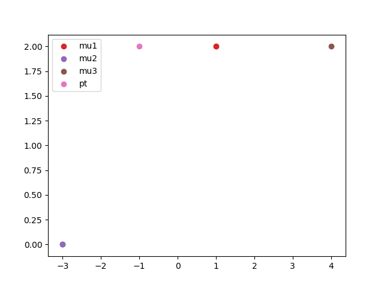
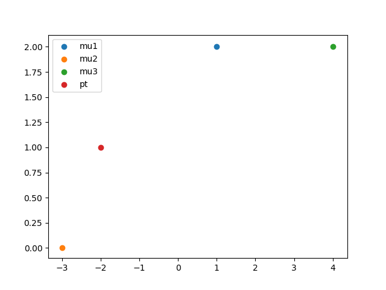

For which of the following tasks might K-means clustering be a suitable algorithm? Select all that apply.
[x] Given a set of news articles from many different news websites, find out what are the main topics covered. I guess it could be a 2 cluster
[x] From the user usage patterns on a website, figure out what different groups of users exist.
[ ] Given historical weather records, predict if tomorrow's weather will be sunny or rainy.
[ ] Given many emails, you want to determine if they are Spam or Non-Spam emails.this requires labels
Suppose we have three cluster centroids
closest point = 1, 2. can also be calculated ||x-mu||

second try the point is [-2, 1], so the selected cluster is c=2

K-means is an iterative algorithm, and two of the following steps are repeatedly carried out in its inner-loop. Which two?
[x] Move the cluster centroids, where the centroids
[ ] The cluster centroid assignment step, where each cluster centroid this is not a correct description of the assignemnt step
[ ] Move each cluster centroid
[x] The cluster assignment step, where the parameters
Suppose you have an unlabeled dataset
[ ] Manually examine the clusterings, and pick the best one.
[x] Compute the distortion function
[ ] Use the elbow method.
[ ] Plot the data and the cluster centroids, and pick the clustering that gives the most "coherent" cluster centroids.
Which of the following statements are true? Select all that apply.
[x] If we are worried about K-means getting stuck in bad local optima, one way to ameliorate (reduce) this problem is if we try using multiple random initializations.
[x] For some datasets, the "right" or "correct" value of K (the number of clusters) can be ambiguous, and hard even for a human expert looking carefully at the data to decide.
[ ] Since K-Means is an unsupervised learning algorithm, it cannot overfit the data, and thus it is always better to have as large a number of clusters as is computationally feasible.
[ ] The standard way of initializing K-means is setting